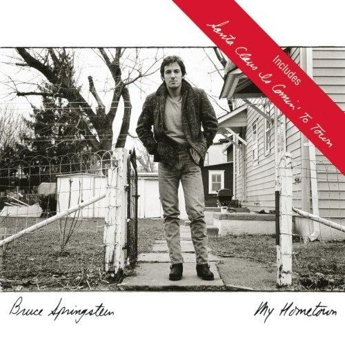

Santa Claus is Coming to Town
19 Dec 2020 · 5 min read
topics: Christmasparenthoodsociety

“Santa Claus is Comin' to Town” was written in 1934, and was first sung on Eddie Cantor's radio show in that same year. It became an instant hit, and it's been a perennial holiday favorite ever since.
Although I'm sure you're familiar with the lyrics, let me just share all of them with you now. You'll note that not all of these words are included on every recording of the song.
I just came back from a lovely trip
Along the Milky Way.
I stopped off at the North Pole
To spend a holiday.I called on dear old Santa Claus
To see what I could see.
He took me to his workshop,
And told his plans to me.Now Santa is a busy man,
He has no time to play.
He's got millions of stockings
To fill on Christmas day.You'd better write your letter now,
And mail it right away,
Because he's getting ready,
His reindeer and his sleigh.You better watch out,
You better not cry!
Better not pout,
I'm telling you why:
Santa Claus is comin' to town.He's making a list
And checking it twice;
He's gonna find out who's naughty or nice.
Santa Claus is comin' to town.He sees you when you're sleeping.
He knows when you're awake.
He knows if you've been bad or good,
So be good for goodness sake!You better watch out!
You better not cry.
Better not pout,
I'm telling you why:
Santa Claus is comin' to town!With little tin horns, little toy drums,
Rudy-toot-toot and rummy tum tums,
Santa Claus is comin' to town.And curly head dolls that cuddle and coo,
Elephants, boats and kiddy cars too.
Santa Claus is comin' to town.The kids and girls in boy land
Will have a jubilee.
They're gonna build a toy land town
All around the Christmas tree.You better watch out, you better not cry.
You better not pout, I'm telling you why.
Santa Claus is comin' to town.
Lyrically and thematically, this song is a bit of a mystery. At first glance it might appear to be intended as a children's song – and yet I've never seen any indication that it's typically sung for, or by, children. As far as I can tell, there's nothing particularly subtle or sophisticated or witty about any of the lyrics. And the thematic scope is remarkably focused: unlike many popular Christmas lyrics, it's not a bundle of disparate but comforting images, and there's no hint of any good will expressed towards our fellow men and women.
And yet, at the same time, it's not sappy. Oh sure, you can find bad recordings of it, as you can with any Christmas tune, but as I listen to the many versions of it I've got in my collection, I'm surprised at how many great ones I find. There's the one by The Crystals, produced by Phil Spector. There's Diana Krall's run at it. Ella Fitzgerald and Tony Bennett have both recorded lively and eminently listenable renditions. And I could go on.
But perhaps one of the recordings I have in my collection gives us a clue to the song's undying appeal. It's by Joseph Spence, and found on the album MAS! A Caribbean Christmas Party. According to the liner notes from the album, Spence knew no English, and was never taught how to play the song, or what it meant. He just listened to it a few times, and then played it on guitar and sang it phonetically.
You can listen to this version with an array of different reactions. First, there's the comic appeal of it, once you realize what you're listening to. Then there's a sense of shock and dismay, as you listen to a human being delivering this bright Christmas classic with an apparently unending string of guttural noises. Finally, though, once you get past those, there's just the same sense of joyful celebration that we always get from this music, no matter who's performing it for us.
The wonderful thing about this song is that it gives both performers and listeners permission to be joyous children again, no matter what our ages. Oh sure, we can pretend that we're singing it for the kids, but it's really for us. We love singing the chorus to each other, knowing that there really isn't any Santa Claus, but that's OK, because so long as someone close to us thinks we've been nice, and only naughty in the best sort of way, we'll still find presents under the tree on Christmas morning.
I think you can feel this joyful sense of play in the music, and in the way that so many musical performers have taken liberties with the words and music, adding all sorts of delightful embellishments to it.
And there's perhaps no version of this song that better exemplifies this spirit I'm describing than Bruce Springsteen and the E Street Band's live rendition captured in 1975. Springsteen plays with his bandmates and his audience, talking to them before the singing starts, asking them if they've been good; and who better than The Boss to tell you that “You better be good for goodness sake!” It's a rousing rendition, full of good spirits, and one that never fails to bring a smile to my face.
And with this write-up done, my list of The Practical Utopian's 20 favorite Christmas songs is complete; I hope these songs bring you as much Christmas joy as I know they do every year for me and my family.
Back to the complete list of Christmas Favorites from The Practical Utopian.